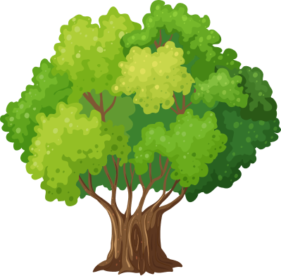

2023년 생명의 숲은 기후위기시대 나무를 잘 심고 잘 가꾸며 건강한 숲 지속가능한 사회를 만들어 갑니다.

녹색도시공동체를 위한
도시숲운동
숲을 통해 건강한 도시생태계를 만들고자 합니다. 도시의 생활환경을 개선하기 위해 시민과 함께 숲을 가꿉니다. 지속가능한 도시숲의 관리를 위해 숲을 가꾸는 지역의 자원활동가를 양성화고 활동을 지원합니다. 더 많은 도시민이 숲의 소중함을 느낄 수 있도록 다양한 숲문화교육프로그램을 기획, 운영하고 있습니다.